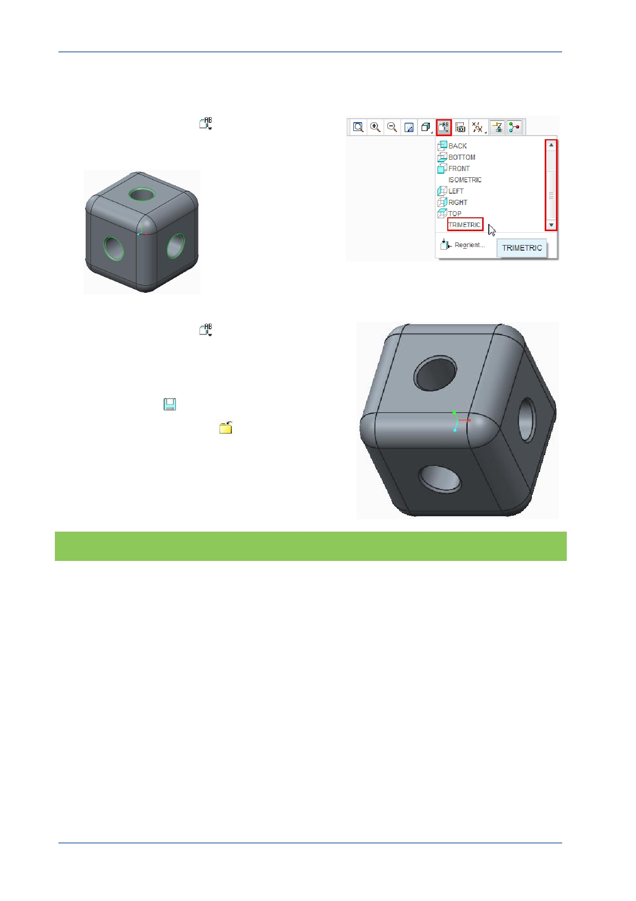

PTC Academic Program
Until now, you have used only CTRL + D to reorient your model. This time you will
select named views from the Graphics toolbar:
9. Click Named Views
from the Graphics
toolbar, then scroll down and select
TRIMETRIC from the drop-down menu.
10. Click Named Views
and select Standard
Orientation from the drop-down menu.
11. Saving your work and closing open windows
from the Quick Access toolbar:
Click Save
to save your work.
Click Close Window
as many times as
are required to close any open windows.
What have you learned?
Engineering feature – Chamfer.
Chamfer dashboard – width (D x D).
Selecting edge references – individual, adding reference edges with CTRL key.
Rotating the model.
Edit Definition to re-open and edit existing features.
Saving the model.
© 2012 PTC
Creo Parametric 2.0 Primer
Page 43